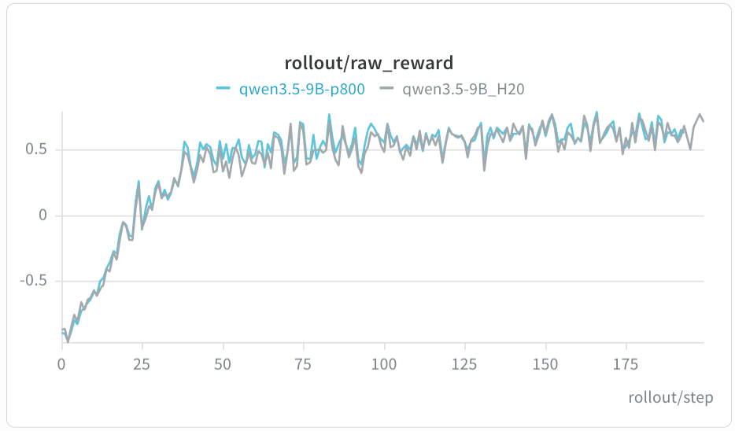
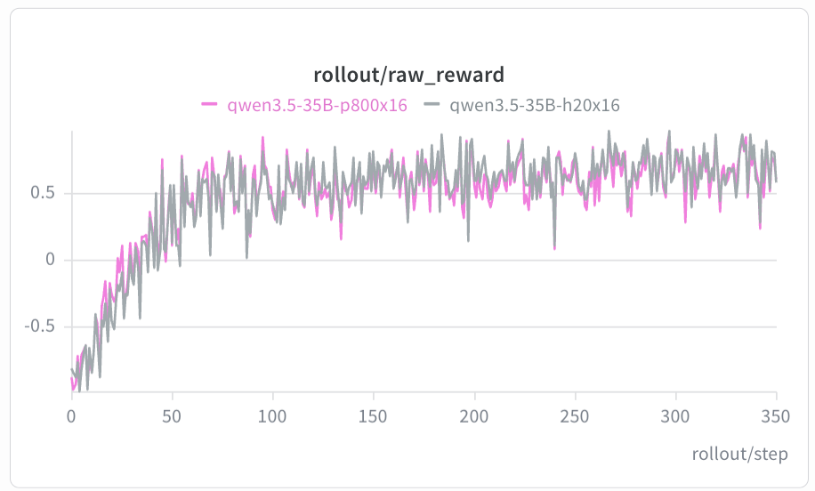
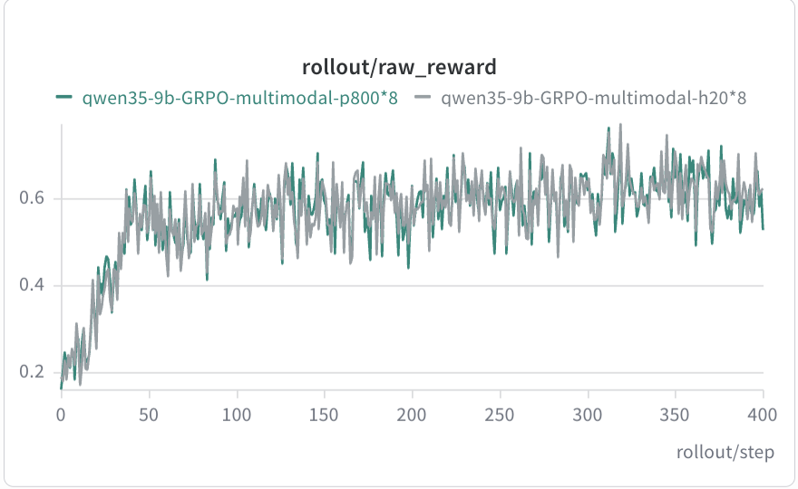
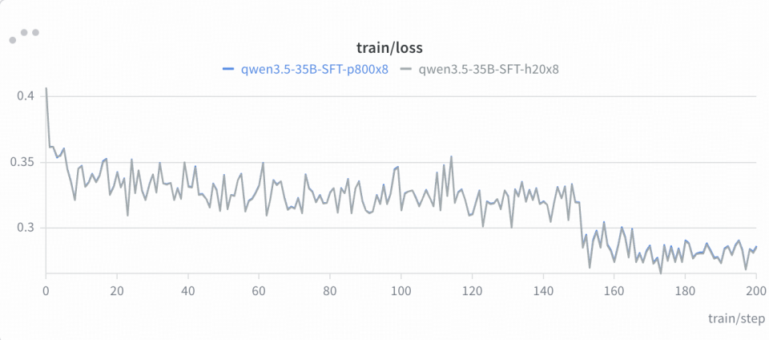
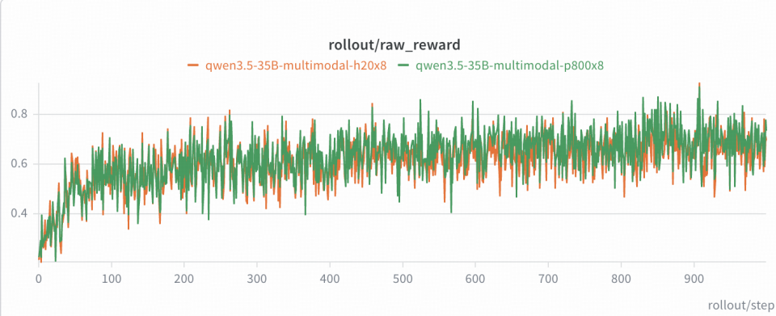

硬件规模
8 卡单机；Qwen3.5-35B-A3B DAPO 支持 16 卡 / 两机。
Relax 已在昆仑芯 P800 上完成训练链路适配，覆盖纯文本 RL、多模态 RL 与 SFT。相同模型、数据集和超参下，P800 曲线与 GPU 基线保持一致。
Relax 社区仓库P800 适配沉淀为硬件无关的框架能力，用户通过既有 Relax 训练脚本即可复现。
8 卡单机；Qwen3.5-35B-A3B DAPO 支持 16 卡 / 两机。
P800 设备抽象、Ray 资源识别、BKCL 通信和训推权重同步已接入主干。
Qwen3、Qwen3.5、Qwen3.6 及对应视觉语言模型。
RL 观察 raw_reward，SFT 观察 loss，曲线与 H20 基线对齐。
覆盖 DAPO RL、多模态 RL 与 SFT，所有入口均来自仓库现有脚本。
| 场景 | 模型 | 资源 | 参考脚本 |
|---|---|---|---|
| DAPO RL | Qwen3-4B | 8 卡 | run-qwen3-4B-8xklx.sh |
| DAPO RL | Qwen3.5-9B | 8 卡 | run-qwen35-9B-8xklx.sh |
| DAPO RL | Qwen3.5-35B-A3B | 16 卡 / 两机 | run-qwen35-35B-A3B-16xklx.sh |
| DAPO RL | Qwen3.6-27B | 8 卡 | run-qwen36-27B-8xklx.sh |
| DAPO RL | Qwen3.6-35B-A3B | 8 卡 | run-qwen36-35B-A3B-8xklx.sh |
| 多模态 RL | Qwen3.5-9B（VL） | 8 卡 | run-qwen35-9B-8xklx-openr1mm-sync.sh |
| 多模态 RL | Qwen3.5-35B-A3B（VL） | 8 卡 | run-qwen35-35B-A3B-8xklx.sh |
| SFT | Qwen3.5-9B | 8 卡 | run-qwen3.5-9B-8xklx.sh |
| SFT | Qwen3.5-35B-A3B | 8 卡 | run-qwen3.5-35B-A3B-mtp-sft-8xklx.sh |
以下曲线来自相同模型、数据集和超参下的 P800 与 H20 对比。RL 以 raw_reward 为指标，SFT 以 loss 为指标。





准备好 P800 设备和 P800 XPU/PyTorch 运行时后，使用仓库中的参考脚本启动训练。
/dev/xpu0 … /dev/xpu7 与 /dev/xpuctrl。xpu_smi 确认设备状态。cd /workspace/Relax
export MODEL_DIR=/workspace
export DATA_DIR=/workspace
export EXP_DIR=/workspace
bash scripts/training/text/run-qwen3-4B-8xklx.shP800 适配以硬件无关的方式回馈 Relax 主干，新增硬件只需实现统一的设备能力接口。
relax/utils/device.py 通过 /dev/xpuctrl 自动识别 P800。
bridge / direct 转换链路解除 CUDA 假设，支持非 CUDA 后端。
修复 fp16 动态 loss scaling 下溢出重试与重复 unscale 问题。
当前集中在 colocate；Hybrid 与 Fully Async 将随回归矩阵持续补齐。